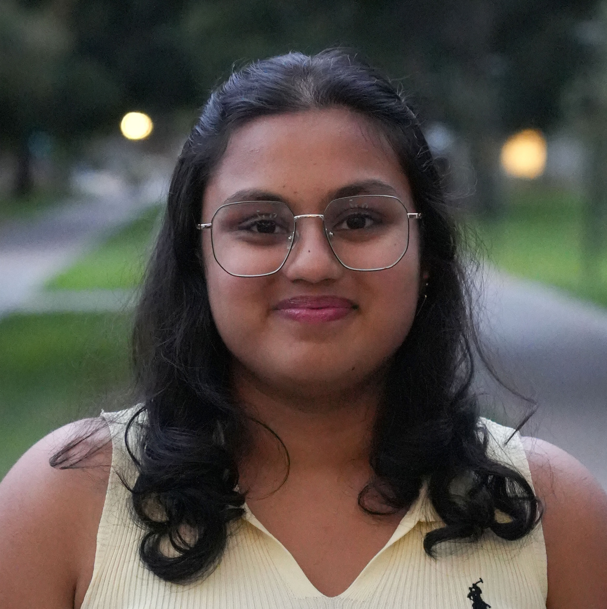
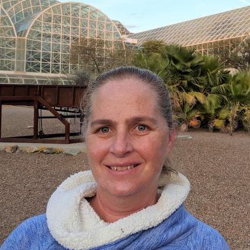
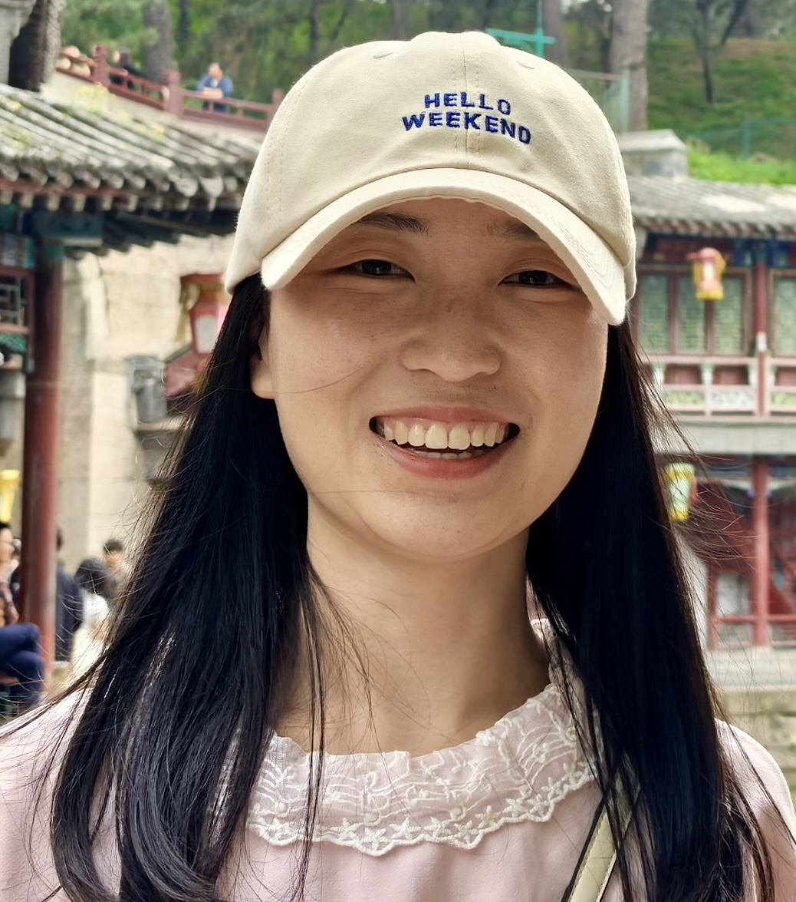
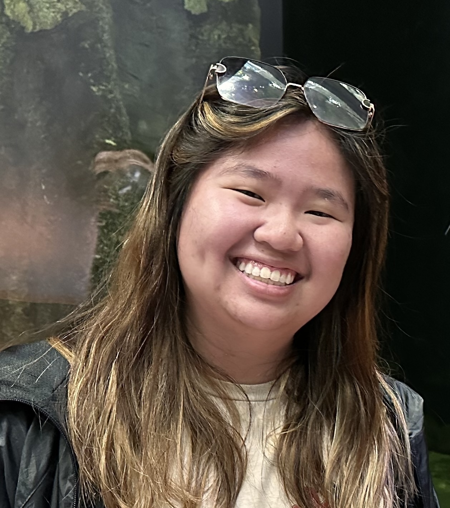
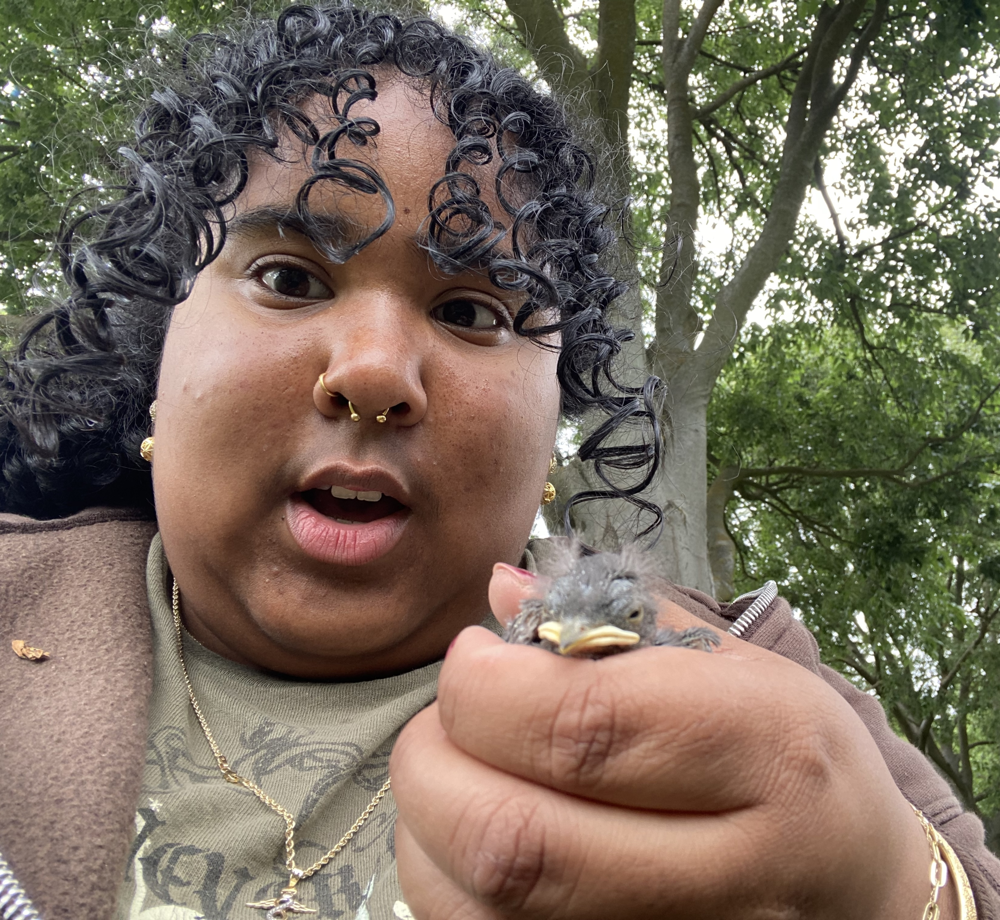

People
Current R-I Lab members
Please read more information on joining the lab and lab expectations.
## Warning in scan(file = file, what = what, sep = sep, quote = quote, dec = dec,
## : EOF within quoted string


Yu Cao (she/her) 

Yu is a joint postdoc with our collaborator Ning Yang at HZAU. Yu is working on understanding the population and quantitative genetics of introgressed teosinte haplotypes in maize.


Juliette (she/her) is a third-year Wildlife Fish and Conservation Biology major with a minor in Global Disease Biology. She works closely with Julia Harenčár to investigate hybridization between invasive wild radish and crop radish with a focus on how gene flow facilitates adaptation across diverse environmental conditions. Natasha Dhamrait,she/her,images/natasha.jpg,125,twitter|https://twitter.com/frondsrfriends,Natasha is a student in the Population Biology graduate group with interests including plant evolution

domestication ( genome biology)
working on climate adaptation and hybridization in California wild radishes. Forrest Li,he/him,images/Forrest_casual.jpg,125,linkedin|https://www.linkedin.com/in/forrest-li/;twitter|https://twitter.com/genomeofforrest;github|https://github.com/liforrest6;orcid|https://orcid.org/0000-0003-2965-2494;scholar|https://scholar.google.com/citations?user=HSmh38QAAAAJ&hl=en,Forrest is a graduate student in Integrative Genetics and Genomics working on climate adaptation in maize as part of a large international collaboration led by CIMMYT. He is coadvised by Dan Runcie. Beibei Liu,she/her,images/beibei.jpg,125,twitter|https://twitter.com/beibeiliu13;orcid|https://orcid.org/0000-0003-1656-4954;scholar|http://scholar.google.com/citations?user=yhHsL9gAAAAJ,Beibei is a postdoc working on the evolution of transposable elements in maize and teosinte. During her PhD she worked on epigenetics in maize. Qianhui Lyu, she/her,images/qianhui.jpg,125,,Qianhui is a first-year biological sciences major currently working with Beibei on transposable elements and structural variation in maize Paulo Magalang,he/him,images/paulo.png,125,linkedin|https://www.linkedin.com/in/paulo-magalang-0b1468155/;github|https://github.com/pmagalang,Paulo is a graduate student in Integrative Genetics and Genomics working on using whole genome assemblies to study allelic diversity and demography in maize. Jeffrey Ross-Ibarra,he/him,images/jri_steam.jpeg,125,home|https://rilab.ucdavis.edu;bluesky|https://bsky.app/profile/jrossibarra.bsky.social;github|http://github.com/rossibarra;orcid|https://orcid.org/0000-0003-1656-4954;txt|https://github.com/rossibarra/CV;scholar|http://scholar.google.com/citations?user=5SzRq1oAAAAJ,Jeff is a Professor in the Department of Evolution and Ecology and a faculty member of the Center for Population Biology and the Genome Center. He is also the Scientific Director of HPC@UCD. Samantha Snodgrass,she/her,images/sam.jpeg,125,twitter|https://twitter.com/snodgrasshopper;orcid|https://orcid.org/0000-0001-9209-6051;scholar|http://scholar.google.com/citations?user=yhHsL9gAAAAJ,Sam is an NSF Plant Genome postdoc working on the coevolution of humans and their domesticated plants. She is coadvised by Graham Coop. Cristian Stark,he/him,images/stark.jpg,125,linkedin|https://www.linkedin.com/in/cristian-stark/;github|https://github.com/cstark14,Cristian is a Genomics Data Scientist at Bayer Vegetables R&D and a PhD graduate student in Integrative Genetics and Genomics working on genomic selection